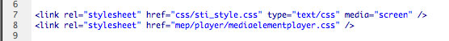
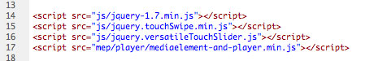
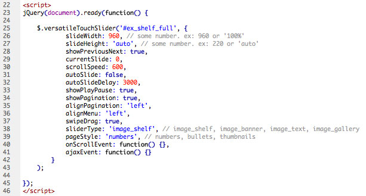
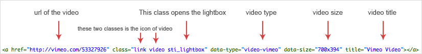
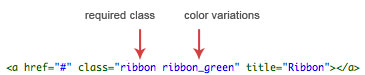
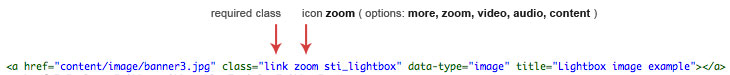

Versatile Touch Slider is a jQuery plugin with many possibilities. It may just be a banner rotator or a bookshelf to display products. It has the feature touch to mobiles and drag for the desktops.
It is responsive and adapts to different types of resolution and media. Can be viewed with auto adjusts on desktops, tablets and smartphones.
This package is also included multimedia resources. Video formats available: Youtube, Vimeo, MP4, FLV. Audio is also available (MP3 format). A lightbox (of the plugin) is used to display images, video and audio.
Below are the files that should be added inside the head tag of html.
Styles

Scripts

Initialize the plugin
HTML Markup
In this plugin there are 4 types of slider (image_shelf, image_banner, image_text, image_gallery). The HTML markup is appropriate for each type of slider. Below is an example of the markup image_shelf.
Important: See in the examples available, the characteristics of each html markup for each type of slider. For example, if you want to use the plugin as a banner rotator, see the markup inside the file "ex_banner_thumbnails.html" or "ex_banner_callback.html"
| Parameter | Options |
| slideWidth | Number or "100%". |
| slideHeight | Number or "auto". For flexible slider height set to "auto" |
| showPreviousNext | true or false. Show or not the navigation buttons |
| currentSlide | 0. (number) means the first slider. For example, if you want to start in the third slide, set for 2 |
| scrollSpeed | Number. This value is specified in milliseconds. 1 second = 1000 |
| autoSlide | true or false. |
| autoSlideDelay | Number. This value is specified in milliseconds. 1 second = 1000 |
| showPlayPause | true or false. Show or not play/pause controls |
| showPagination | true or false. Show or not pagination |
| alignPagination | "left", "center", "right" |
| alignMenu | "left", "center", "right" |
| swipeDrag | true or false. Enables or not the option of touch swipe (mobile) and drag (desktop) |
| sliderType | "image_shelf", "image_banner", "image_text", "image_gallery" |
| pageStyle | "numbers", "bullets", "thumbnails" |
| orientation | "horizontal", "vertical". If vertical, the "slideHeight" option must be a number, not 'auto'. The height of the slider needs to be constant. |
| onScrollEvent | callback function. This event is run every time that a slide is scrolled. See an example in the file "ex_banner_callback.html" |
| ajaxEvent | callback function. This event is only used for open content with ajax. See an example in the file "ex_ajax.html" |
Using Lightbox
To use the lightbox just add the class "sti_lightbox". In the example below when clicking on the link will open a Vimeo video inside the Lightbox.
Using Ribbon
The file .psd is available in the package if you want to change the design and text of the ribbon.
Using Icons
The file .psd is available also in the package if you want to change the design of the icons.
Design and development by srvalle
Thanks for all authors of the plugins used in this package:
- touchSwipe - jQuery Plugin
- ImagesLoaded - jQueryPlugin
- MediaElementJs
- Media Element Skin
- Animate.css